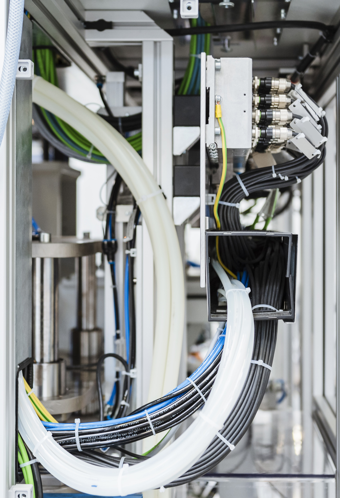
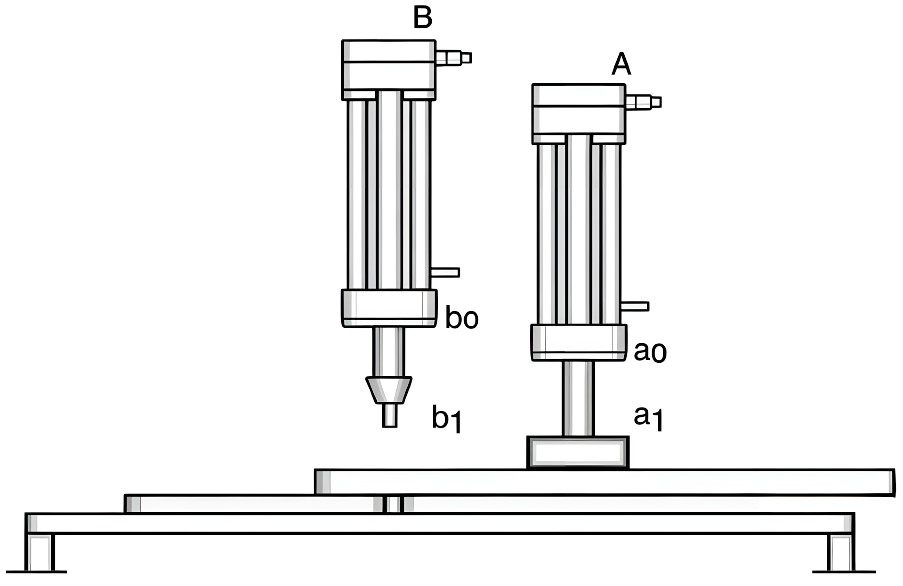
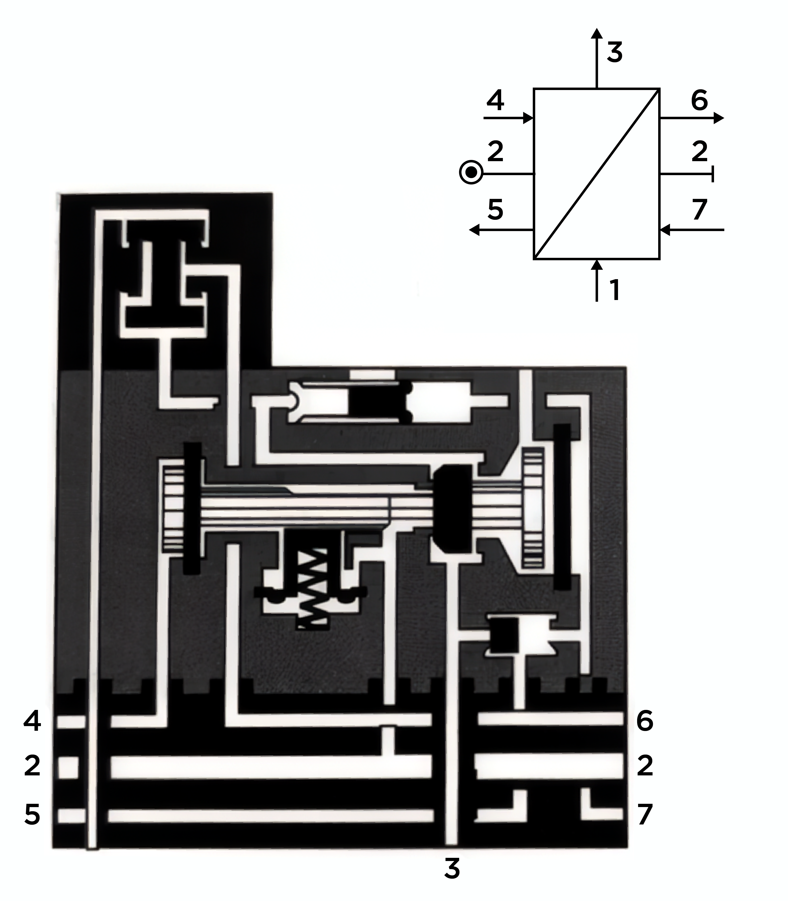
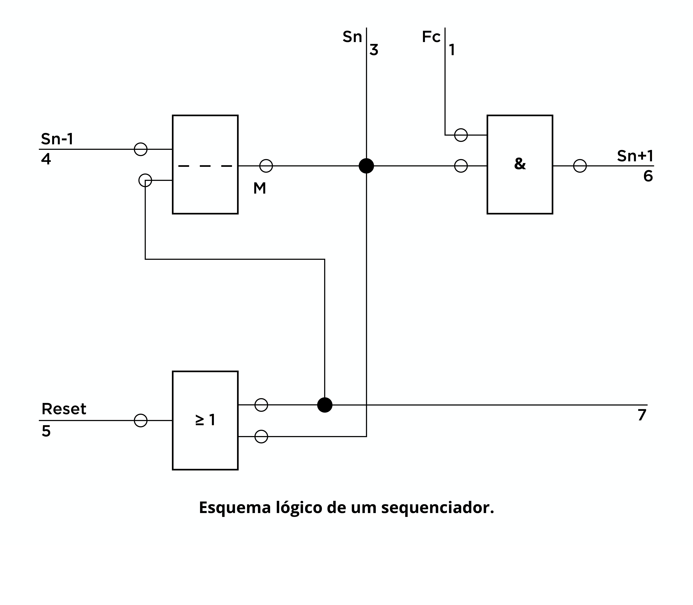
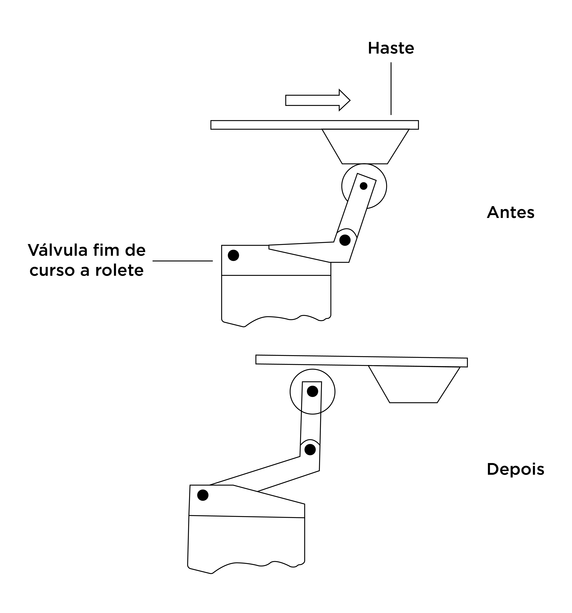
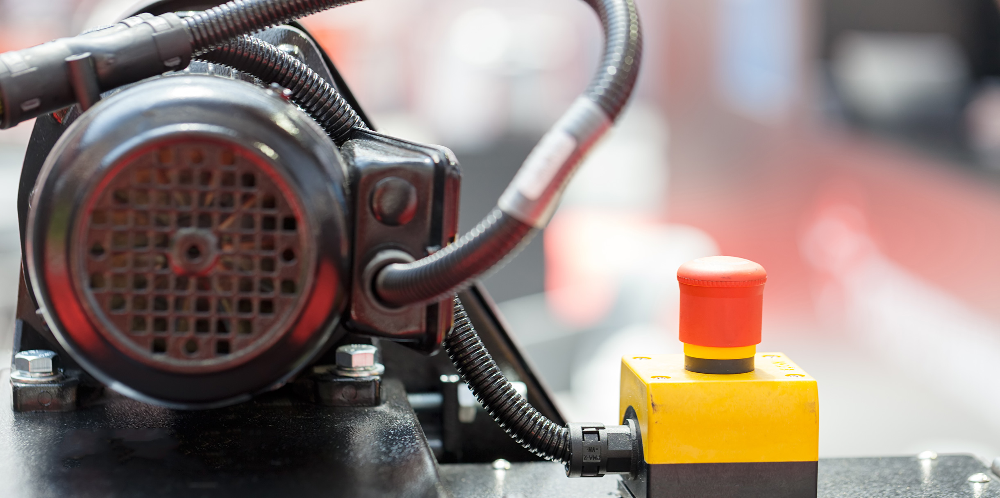

Definição da sequência de trabalho.
Aula
Métodos avançados e lógicas cabeadas



Nesta aula, os seguintes tópicos serão explorados:
tópico
1
Tópico 1: Método cascata: estrutura e aplicação
tópico
2
Tópico 2: Método passo a passo: sequências e estágios
tópico
3
Tópico 3: Lógicas cabeadas e introdução à eletropneumática


Tópico 01
Método cascata: estrutura e aplicação
Olá, estudante! Na aula anterior, você percebeu que nem toda sequência pneumática pode ser resolvida com tranquilidade pelo método intuitivo, ou método direto. Em muitos casos, o circuito parece correto no papel, mas trava quando é montado, justamente porque alguns sinais permanecem ativos além do momento adequado. Esse problema é típico dos chamados sinais bloqueadores, que impedem o prosseguimento normal do ciclo.
E é exatamente nesse ponto que entram os métodos avançados de circuitação, entre eles, o método cascata.
O método cascata ocupa um lugar central, porque organiza a lógica do circuito em linhas de comando sucessivas, evitando que sinais incompatíveis permaneçam ativos ao mesmo tempo. Em outras palavras: em vez de deixar todos os sinais “livres” no sistema, o método cascata distribui a alimentação do comando por etapas, liberando apenas o grupo de sinais que deve atuar em cada momento do ciclo (Fialho, 2011; Prudente, 2015).
Por que o método cascata é necessário?
Antes de falar da estrutura, vale retomar o problema de aulas anteriores. Imagine uma sequência com dois atuadores:
A+, B+, A−, B−.
À primeira vista, ela parece simples. No entanto, dependendo da forma como os fins de curso são ligados, um sinal como a1 ou b0 pode permanecer ativo durante mais de uma fase e gerar conflito de pilotagem. Esse é o tipo de situação que já havia aparecido ao estudar sinais contínuos e sinais bloqueadores. Quando isso acontece, o circuito pode:
-
Travar em uma etapa.
-
Comutar duas pilotagens ao mesmo tempo.
-
Repetir parte do ciclo indevidamente.
-
Ou simplesmente não sair do estado em que entrou.
O método cascata surge justamente para resolver esse tipo de limitação. Em vez de depender apenas da permanência dos sinais dos fins de curso, ele passa a organizar o comando em linhas pneumáticas, alimentadas alternadamente, de modo que somente a linha ativa naquele instante tenha pressão de comando disponível, assim como ilustra a Figura 1.
Clique na imagem para ampliar.
Figura 1 - Exemplos de método cascata com 2 (a), 3 (b) e 4 (c) linhas
Fonte: o autor.
O que é o método cascata?
De acordo com Prudente (2015), o método cascata se apoia na utilização de válvulas de memória, normalmente válvulas biestáveis 5/2, ligadas em linhas ou grupos sucessivos. Essas linhas são alimentadas alternadamente em pressão e descarga, de modo que o sinal de comando apareça apenas no momento em que aquela linha deve operar.
Em linguagem mais prática:
Perceba a diferença em relação ao método direto: aqui o circuito não depende apenas do fim de curso “continuar apertado” ou “deixar de apertar”. Ele depende de uma lógica de habilitação por estágios. Isso torna a sequência mais robusta.
Como dividir as linhas no método cascata?
Esse é o coração do método.
Segundo Filho e Santos (2018), a divisão das linhas deve obedecer a uma regra fundamental: o mesmo atuador não pode aparecer duas vezes na mesma linha.
Vamos observar alguns exemplos no quadro I:
Quadro I - Exemplos de separação de linhas por sequência
Fonte: o autor.
Em sequências mais longas ou com retorno imediato do mesmo atuador, pode ser necessário criar três ou mais linhas. Para alimentar duas linhas, utiliza-se uma válvula biestável 5/2; para três linhas, duas válvulas; para quatro linhas, três válvulas, e assim por diante.
Esse raciocínio é extremamente importante, porque mostra que a complexidade do circuito não depende apenas da quantidade de cilindros, mas também da forma como os movimentos se repetem ao longo da sequência.
Estrutura típica e indicações do método cascata
Para Fialho (2011), a construção do método cascata envolve:
- Definição da sequência de trabalho.
- Elaboração do diagrama trajeto-passo.
- Divisão da sequência em linhas.
- Associação dos atuadores às válvulas de potência.
- Associação dos fins de curso aos sinais de comutação.
- Uso de válvulas de memória para alternar a alimentação entre linhas.
- Desenho final do P&ID (Diagrama de Tubulação e Instrumentação).
Na prática, isso significa que a lógica deixa de ser “um emaranhado de sinais” e passa a ser uma cadeia organizada de habilitações (Figura 2).
É exatamente por isso que o método cascata é considerado um método mais avançado: ele exige mais raciocínio na etapa de projeto, mas entrega maior confiabilidade no comportamento do circuito.
Prudente (2015) afirma que o método cascata é indicado quando há:
-
Dois ou mais atuadores em sequência.
-
Sinais bloqueadores no método direto.
-
Necessidade de comando automático ou semiautomático com melhor organização.
-
Ciclos repetitivos mais longos.
-
Necessidade de clareza entre fases de comando.
Ele também possui enorme valor didático, porque ajuda a perceber que automação pneumática não é apenas ligação física entre componentes. Automação é, acima de tudo, organização lógica do processo.
Figura 2 - Método cascata para a sequência A+, B+, A-, C+, C-, B-.

Fonte: o autor.
Estudante, neste tópico, você compreendeu que o método cascata é uma resposta prática ao principal limite do método direto: o conflito de sinais mantidos ao longo do ciclo. Ao dividir a sequência em linhas e utilizar válvulas de memória para alternar a alimentação do comando, esse método organiza a lógica do circuito e permite executar ciclos mais complexos com maior confiabilidade. Essa função da cascata como alternativa ao método direto está diretamente alinhada à lógica cabeada, que será vista posteriormente.
No próximo tópico, você estudará outra forma de organizar a sequência: o método passo a passo, no qual a lógica é estruturada por estágios sucessivos de comando.
para pensar
Durante a elaboração de um circuito pneumático automático com dois atuadores, a sequência prevista era A+, B+, A−, B−. Ao tentar resolver o problema com lógica simples, a equipe percebeu que precisava organizar o comando em grupos para evitar conflitos de sinais ao longo do ciclo.
Considerando esse contexto, assinale a alternativa que apresenta corretamente a lógica do método cascata.
- O método cascata organiza o comando em linhas sucessivas, alimentadas alternadamente, de modo que apenas o grupo necessário atue em cada etapa.
- O método cascata elimina a necessidade de válvulas de memória, pois todos os sinais atuam ao mesmo tempo.
- No método cascata, o mesmo atuador deve aparecer repetidamente na mesma linha para manter a continuidade do ciclo.
- O método cascata é indicado apenas para circuitos manuais com um único cilindro.
- No método cascata, a sequência depende exclusivamente do operador, sem participação de fins de curso.
A alternativa A é a correta.
Justificativa: O método cascata estrutura o comando em linhas ou grupos, utilizando memória para alimentar apenas a linha ativa em cada etapa da sequência. Isso ajuda a evitar conflitos de sinais e melhora a organização lógica do circuito.

Tópico 02
Método passo a passo: sequências e estágios
Estudante, depois de entender o método cascata, vale avançar para outra forma de raciocinar o comando sequencial: o método passo a passo, também chamado de método do sequenciador.
Se no método cascata a lógica é organizada em linhas, no passo a passo, a organização gira em torno de etapas sucessivas, em que cada fase do ciclo habilita a seguinte. Esse tipo de raciocínio aproxima muito você da forma como a automação industrial é pensada em sistemas mais modernos, inclusive quando, mais adiante, o comando deixa de ser puramente pneumático e dialoga com a lógica elétrica e programável (Prudente, 2015).
O que significa “passo a passo”?
Em termos simples, significa decompor o ciclo em passos bem definidos, de modo que:
- Cada passo tenha uma condição de entrada.
- Cada passo executa uma ação específica.
- Cada passo tenha um evento de encerramento.
- E esse encerramento libera o próximo passo.
Esse raciocínio parece familiar porque, na verdade, ele já estava presente desde o diagrama trajeto-passo estudado anteriormente. A diferença é que agora você não usa o diagrama apenas para “visualizar” a sequência, mas sim como base para uma lógica estruturada por estágios.
Assim, se o ciclo for:
A+, B+, B−, A−
Ele pode ser organizado como:
Clique em “+” e confira as informações.
Passo 1
Comando para A+.
Passo 2
Comando para B+.
Passo 3
Comando para B−.
Passo 4
Comando para A−.
Cada passagem de um passo para o outro depende de um evento claro, geralmente um dispositivo chamado sequenciador.
Qual é a vantagem desse método?
A principal vantagem é a clareza sequencial e facilidade de organização.
No método passo a passo, é necessário parar de pensar apenas em “quem liga quem” e pensar em:

- Qual é o estado atual do sistema e a próxima etapa esperada.
- Qual evento encerra a etapa atual.
- Qual sinal deve ser liberado depois disso.
Esse tipo de organização reduz erros de interpretação e ajuda muito quando o circuito precisa ser explicado, documentado, testado ou convertido para outra tecnologia de comando (Prudente, 2015).
Em outras palavras: o passo a passo melhora o raciocínio do projeto.
Passos, estágios e memória
Em circuitos sequenciais, uma etapa precisa “lembrar” que a anterior já aconteceu. Essa é a lógica de memória que já havia aparecido quando foi estudado sobre válvulas biestáveis e circuitos sequenciais anteriormente em comandos pneumáticos.
No método passo a passo, a ideia de válvula de memória fica ainda mais evidente que no método cascata, pois o sistema precisa saber em qual etapa está e reconhecer a ordem do ciclo.
Por isso, esse método prepara muito bem o estudante para pensar em sequências comandadas por relés, sensores, contatores lógicos e, futuramente, CLPs (Fialho, 2011).
Relação entre trajeto-passo e método passo a passo
Aqui, existe uma conexão muito importante. O diagrama trajeto-passo mostra a evolução física dos atuadores ao longo do ciclo. Já o método passo a passo usa essa informação para estruturar o comando por etapas lógicas (Filho; Santos, 2018).
Ou seja:
- O diagrama mostra o que acontece.
- O método passo a passo ajuda a organizar como comandar isso.
Essa distinção é valiosa porque ajuda o estudante a não confundir movimento com comando. O atuador pode estar em uma posição física, mas o sistema de comando precisa saber em que passo da operação ele se encontra.
Sequências e estágios na prática
Vamos pensar em um exemplo:
Desenvolva o P&ID para o sistema pneumático de uma furadeira semiautomática que possui dois pistões, um para fixar a peça (A) e outro para furar (B) com sequência:
A+, B+, B-, B+, B-, A-

Figura 3 - Furadeira pneumática
Fonte: o autor (IA).
Fonte: o autor (IA).
Utilizando sequenciadores, a montagem do circuito fica igual à Figura 4:
Clique na imagem para ampliar.
Figura 4 - Resolução do circuito pelo método passo a passo (método de sequenciador)

Fonte: o autor.
Perceba como cada passo depende de uma confirmação clara da etapa anterior. Esse tipo de raciocínio é extremamente útil na bancada, porque ajuda a localizar o ponto exato onde a sequência falhou ou o sistema não avançou.
Isso tudo é possível pelo sequenciador pneumático, que é um equipamento que permite a execução de ciclos complexos com uma simplificada estrutura de comando. Em caso de falha de projeto, basta resetar o sequenciador e reorganizar as entradas. Normalmente, como ilustra a Figura 5, são utilizadas 7 entradas no sequenciador:


1. Sinal de fim de curso (a0, a1, b0, b1...)
2. Alimentação (fornecimento de ar comprimido).
3. Saída de comando (Sn).
4. Sinal de início de fase (Sn-1).
5. Ativação do Reset para fase anterior (Sn-1).
6. Predispor a fase sucessiva (Sn+1).
Entrada do Reset para a fase atual (Sn).
Figura 5 - Sequenciador
Fonte: Prudente (2015).
Fonte: Prudente (2015).
Dentro de cada módulo sequenciador existe elementos já estudados anteriormente (Figura 6) como:
- Uma memória biestável M.
- Um elemento E (& - AND).
- Um elemento OU (≥1 - OR).

Figura 6 - Lógica de um sequenciador
Fonte: Prudente (2015).
Fonte: Prudente (2015).

Dica
O livro de Automação Industrial - Pneumática: Teoria e Aplicações, de Francesco Prudente (2015) ilustra mais montagens desses sistemas e outros exemplos que podem ser um bom objeto de estudo.
Estudante, neste tópico, você viu que o método passo a passo transforma uma sequência em uma cadeia organizada de estágios. Isso facilita a leitura do ciclo, melhora o diagnóstico e aproxima a automação pneumática da lógica industrial usada em sistemas cabeados e eletropneumáticos.
No próximo tópico, você vai integrar esse raciocínio ao estudo das lógicas cabeadas e entender como a pneumática passa a dialogar diretamente com o comando elétrico.
para pensar
Um estudante analisava a sequência A+, B+, B−, A− e decidiu descrevê-la por etapas sucessivas, identificando para cada fase qual movimento deveria ocorrer e qual evento liberaria a próxima ação do sistema.
Assinale a alternativa que expressa corretamente a principal característica do método passo a passo.
- O método passo a passo é aplicado apenas em sistemas hidráulicos com controle proporcional.
- O método passo a passo dispensa a definição da sequência de trabalho, pois o circuito se ajusta sozinho durante a montagem.
- O método passo a passo só pode ser utilizado quando não há fins de curso no sistema.
- O método passo a passo substitui completamente o diagrama trajeto-passo e torna desnecessária a análise do ciclo.
- O método passo a passo organiza o ciclo em estágios sucessivos, em que cada etapa depende de uma condição clara para liberar a seguinte.
A alternativa E é a correta.
Justificativa: No método passo a passo, a sequência é organizada em etapas lógicas sucessivas. Cada passo possui uma ação e uma condição de transição, facilitando a leitura do ciclo, o diagnóstico e a organização do comando.
Tópico 03
Lógicas cabeadas e introdução à eletropneumática
Estudante, até aqui você trabalhou com a lógica de comando predominantemente pneumática. Os sinais eram gerados por botões pneumáticos, válvulas de fim de curso, pilotagens e elementos de memória também pneumáticos.
Agora, a disciplina avança um passo importante: compreender o que são lógicas cabeadas e como elas abrem caminho para a eletropneumática.
Lógica cabeada é aquela realizada por dispositivos pneumáticos, elétricos ou eletrônicos conectados entre si de forma estruturada, formando um sistema rígido, isto é, um sistema cuja alteração exige mudança física nas conexões. Em contraste, a lógica programada permite alteração do ciclo por software.
O que são lógicas cabeadas?
Quando falamos em lógica cabeada, estamos falando de um comando construído por interligação física entre componentes. Em outras palavras, a lógica do sistema está no cabeamento, na forma como válvulas, sinais, sensores e acionamentos são conectados entre si.
Se o circuito precisar mudar de comportamento, não basta alterar um parâmetro, é necessário modificar a própria montagem.
Dentro dessa lógica cabeada, existem métodos aplicados, como, de acordo com os autores Prudente (2015), Fialho (2011) e Filho e Santos (2018), o método intuitivo (direto), método cascata, método de fim de curso com rolete operando em um único sentido e método passo a passo (sequenciador).
Como você já estudou o método intuitivo na aula anterior, e nesta aula viu o cascata e o passo a passo, falta comentar brevemente uma solução intermediária importante: o método com fim de curso a rolete operando em um único sentido.
Método com fim de curso a rolete operando em um único sentido
Esse método aparece quando o circuito apresenta sinais bloqueadores, isto é, sinais que permanecem ativos por tempo suficiente para impedir o prosseguimento do ciclo. Prudente (2015) explica que o método com rolete em único sentido se baseia no fato de que esse componente gera um sinal impulsivo e não contínuo, evitando o bloqueio lógico causado por um fim de curso mantido.
Na prática, a ideia é simples: em vez de manter o sinal ativo durante toda a permanência do atuador em determinada posição, a válvula com rolete em um único sentido gera apenas um pulso de comando. Com isso, a lógica recebe a informação necessária para avançar de fase, mas sem manter a pilotagem ativa além do momento adequado (Fialho, 2011).
Outro ponto importante a ser destacado é que a montagem desse tipo de fim de curso é feita antes do fim do curso da haste do atuador (Figura 7).
Apesar de ser uma solução interessante, o próprio conteúdo ressalta que esse método não é muito utilizado, pois o tempo de ativação pode não ser suficiente para garantir o prosseguimento do ciclo com confiabilidade.

Figura 7 - Rolete de único sentido
Fonte: Prudente (2015).
Fonte: Prudente (2015).
Isto é, didaticamente, ele é importante para mostrar que existe uma tentativa de resolver o sinal bloqueador ainda dentro da lógica pneumática simples. Mas, em aplicações mais robustas, métodos como cascata e sequenciador tendem a oferecer maior segurança lógica.
O infográfico a seguir resume os principais métodos de lógica cabeada:
Clique na imagem para ampliar.
Fonte: o autor.
Por que esse conteúdo se conecta com a eletropneumática?
Ao estudar lógicas cabeadas, você percebe que o raciocínio da automação não depende apenas do fluido usado para mover o atuador. Ele depende, principalmente, de como os sinais são organizados.
É justamente aqui que surge a ponte para a eletropneumática.
Na eletropneumática, a potência de atuação continua sendo pneumática, ou seja, o cilindro ainda é movimentado por ar comprimido. No entanto, parte da lógica de comando deixa de ser puramente pneumática e passa a ser feita por sinais elétricos (Fialho, 2011).
Isso significa, por exemplo, que:
Esse arranjo aparece claramente na atividade prática da disciplina, que propõe exatamente o uso de botoeiras, chave seletora, sensores magnéticos e válvulas 5/2 de acionamento elétrico, sem focar ainda em contatores e temporizadores.
O que é eletropneumática?
A eletropneumática é a integração entre comando elétrico e potência pneumática.
Segundo Filho e Santos (2018), em termos simples:
-
A parte elétrica decide quando a válvula deve comutar.
-
A parte pneumática executa o movimento do atuador.
Isso torna o sistema mais organizado do ponto de vista do comando e aproxima você da lógica utilizada em máquinas industriais reais, nas quais sensores, botoeiras e válvulas solenoides trabalham juntos para produzir movimentos automáticos.
Além disso, a eletropneumática facilita a leitura da lógica do sistema, a expansão do circuito e a futura transição para comandos ainda mais avançados, como relés e CLPs.

envato.com
Estudante, ao longo desta disciplina, você construiu uma base importante no universo da pneumática e da automação de sistemas fluídicos. Em oito aulas, avançou desde os fundamentos do ar comprimido e dos principais componentes pneumáticos até a interpretação de circuitos, métodos de sequenciamento e aplicações de comando.
Você aprendeu a identificar atuadores, válvulas e sinais, interpretar diagramas, analisar sequências de movimentos e compreender diferentes estratégias de circuitação, como o método direto, o cascata, o sequenciador e, complementarmente, o método com rolete operando em um único sentido.
Nesta etapa final, também percebeu que a evolução natural desses sistemas leva à eletropneumática, em que o movimento continua sendo feito pelo ar comprimido, mas o comando passa a incorporar sensores, botoeiras, chaves e válvulas com acionamento elétrico.
Agora, você consegue interpretar circuitos pneumáticos com mais segurança, relacionar sinais e movimentos em sequências automáticas e compreender a transição entre lógica pneumática e eletropneumática.
Mais do que memorizar símbolos e sequências, sua formação nesta disciplina buscou desenvolver a compreensão das soluções técnicas e do funcionamento dos sistemas. Esse é o conhecimento que fortalece sua atuação em contextos industriais, de manutenção e de automação.
Este é o encerramento da disciplina, mas não o fim da sua jornada de aprendizagem. Continue aprofundando seus estudos, observando aplicações práticas e conectando teoria e prática em sua formação profissional.
Bons estudos e até a próxima!
para pensar
Em uma bancada de automação, o cilindro continuava sendo movimentado por ar comprimido, mas o comando passou a utilizar botoeiras, sensores magnéticos, chave seletora e válvulas 5/2 com acionamento elétrico. Em outro momento, discutiu-se também o uso de fim de curso a rolete operando em um único sentido, que gera um sinal impulsivo para evitar bloqueios de comando.
Assinale a alternativa correta.
- O rolete em único sentido mantém o sinal contínuo por mais tempo, aumentando o bloqueio do circuito.
- O sistema deixa de ser pneumático quando utiliza sensores elétricos, tornando-se exclusivamente eletrônico.
- O uso de comando elétrico com potência pneumática caracteriza um sistema eletropneumático, e o rolete em único sentido gera sinal impulsivo, ajudando a reduzir sinal bloqueador.
- A eletropneumática elimina o uso de válvulas direcionais, pois o acionamento passa a ser feito diretamente pelo motor elétrico.
- O rolete em único sentido e a eletropneumática são métodos idênticos, aplicados apenas em circuitos hidráulicos.
A alternativa C é a correta.
Justificativa: Na eletropneumática, o movimento continua sendo produzido por ar comprimido, enquanto o comando passa a incorporar sinais elétricos. Já o fim de curso a rolete em um único sentido se destaca por gerar um sinal impulsivo, reduzindo o efeito do sinal bloqueador.
videoaula
Sua próxima etapa é assistir à videoaula, onde você poderá ver os conceitos em ação e ampliar sua compreensão. Essa é uma ótima oportunidade para reforçar o aprendizado.
Assista a videoaula
Referências
FIALHO, A. B. Automação Pneumática: projetos, dimensionamento e análise de circuitos. 7. ed. São Paulo: Érica, 2011.
FILHO, E. S. D. S.; SANTOS, B. K. Sistemas hidráulicos e pneumáticos. Porto Alegre: Sagah, 2018.
PRUDENTE, F. Automação industrial pneumática: teoria e aplicações. Rio de Janeiro: LTC, 2015.
Parabéns!
Você acaba de concluir uma etapa importante da sua jornada. Agora é hora de seguir em frente!
©Unipar - Todos direitos reservados | Design by